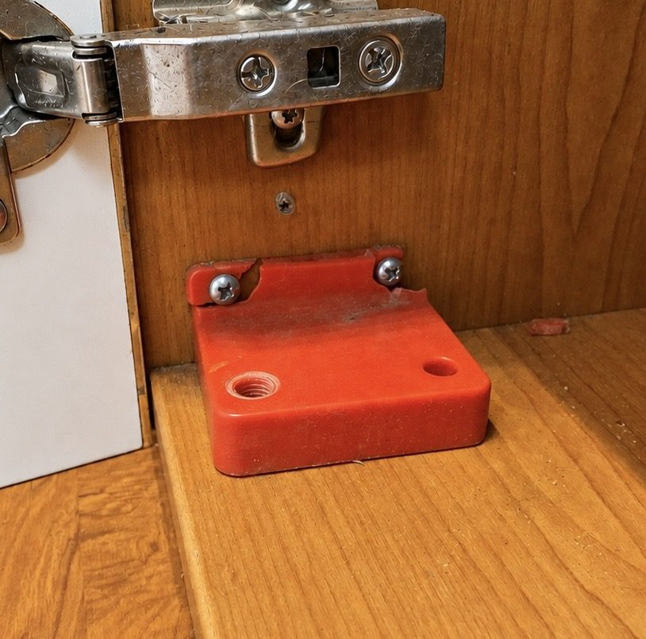
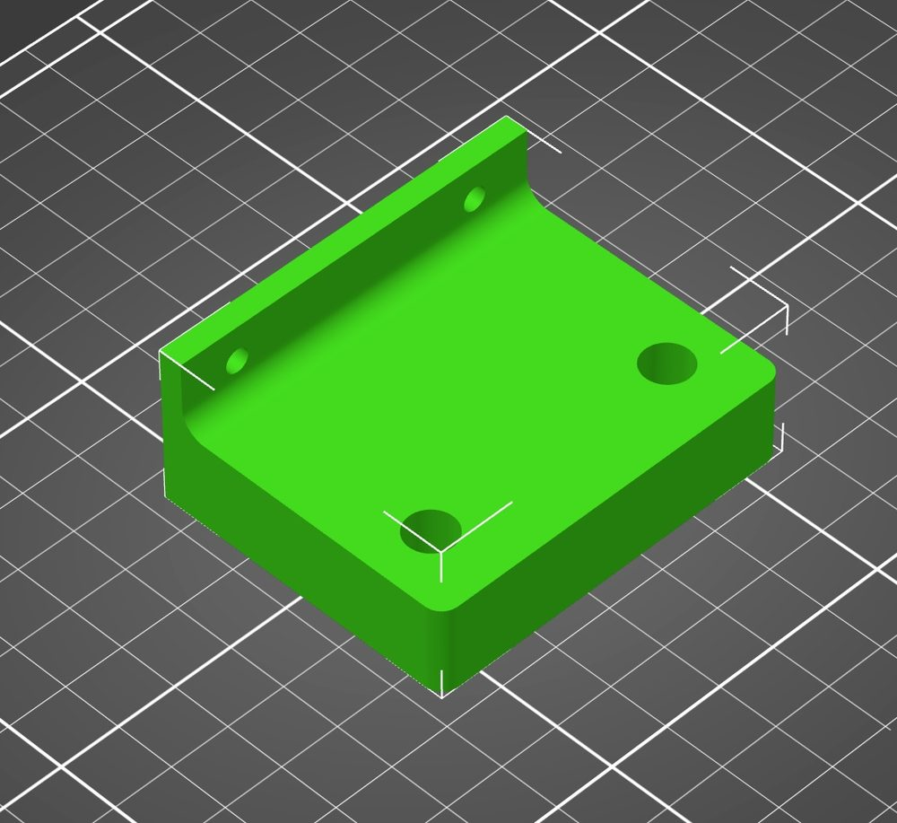
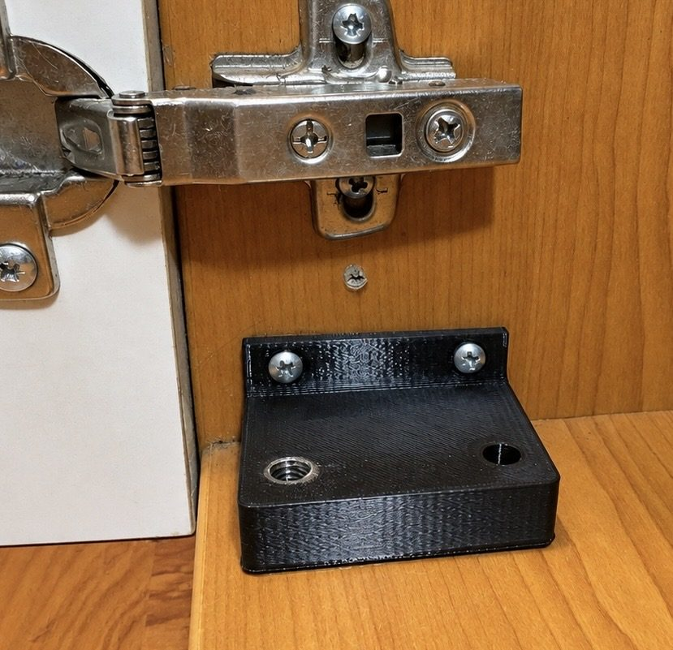

3D tisk náhradních dílů pro domácnosti i firmy · Praha a okolí · hotové díly posílám po celé ČR
Náhradní díly 3D tiskem na míru – zaměřím, vyrobím a vyměním
Kvůli jedné prasklé plastové součástce nemusíte vyhazovat spotřebič, nábytek ani odstavovat vybavení provozu. Podle rozbitého dílu nebo místa, kam patří, vytvořím 3D model, vytisknu náhradu z vhodného materiálu a podle potřeby ji také namontuji.
- Posouzení podle fotky zdarma
- Cenu domluvíme předem
- U funkčních dílů při prasknutí vytisknu nový zdarma
Od rozbité součástky k hotové náhradě
Od rozbitého dílu k hotové náhradě: změřím, navrhnu 3D model a vytisknu díl, který sedí na místo.
-

1 · Rozbitý díl Originál prasklý a nepoužitelný -

2 · 3D model Navrhnu přesnou digitální náhradu -

3 · Vytisknutý díl Hotový kus namontovaný na místě
Máte rozbitý díl, který už nejde koupit?
Nejčastěji vyrábím kolečka, knoflíky, úchytky, krytky, vodítka, držáky, kladky, páčky, spojky a další tvarové součástky. Původní díl nemusí být celý. Často stačí jeho část, fotografie a rozměry nebo možnost změřit místo, kam má náhrada pasovat.
Více o 3D tisku náhradních dílů
Co umím vyrobit
-
Spotřebiče a domácnost
Kolečka košů, knoflíky, krytky, úchytky, vodítka a drobné mechanismy.
Náhradní díly ke spotřebičům -
Nábytek
Vložky pro poškozené panty a vruty, spojky, držáky, koncovky a tvarové náhrady.
Opravy nábytku 3D tiskem -
Firmy, provozy a dílny
Rychlé náhrady, přípravky, držáky a malé série. Digitální model uchovám pro další kusy.
3D tisk pro firmy -
Díly podle vzoru
Díl přesně změřím a vytvořím digitální model. Kde to dává smysl, slabé místo konstrukčně zesílím.
3D modelování podle vzoru
Průsvitné a průhledné díly
Umím tisknout i z průsvitných a téměř průhledných materiálů – tam, kde potřebujete vidět kontrolku, světlo nebo obsah za dílem.
-
Kontrolky spotřebičů
Prasklé okénko nebo krytka nad LED kontrolkou pračky, myčky, trouby či kotle – světlo opět prosvítí a poznáte stav spotřebiče.
-
Světla a difuzory
Zakalený nebo ulomený kryt lampičky, nočního světla, LED pásku nebo stropního bodu – rozptýlí světlo místo ostré LED tečky.
-
Okénka a klapky
Průhledná dvířka skříňky, kryt zásuvky, prohlížecí okénko do mechanismu nebo náhrada rozbitého „sklíčka“ u drobných přístrojů.
-
Zásobníky a hladiny
Nádobka nebo víčko, přes které má být vidět hladina vody, prášku či kapaliny – třeba u zavlažování, dávkovače nebo filtru.
Nevíte, jestli to jde? Pošlete fotku rozbitého dílu s pravítkem nebo metrem vedle – do 24 hodin vám řeknu, jestli ho umím vyrobit a kolik to bude stát.
Co ode mě dostanete
-
Změření a 3D modelování
Díl přesně změřím – i zlomený nebo neúplný – a navrhnu jeho 3D model. Kde to jde, díl rovnou vylepším, aby se znovu nezlomil.
Jak probíhá modelování -
Tisk z odolných materiálů
PETG pro běžné použití i v průsvitné a průhledné variantě, ASA pro teplo a UV záření, TPU pro pružné díly. Materiál volím podle toho, co díl musí vydržet a jestli má propouštět světlo.
3D tisk náhradních dílů -
Výměna na místě
Hotový díl přivezu a namontuji – rozeberu, co je potřeba, vyměním, vyzkouším a po sobě uklidím.
Máte vlastní 3D model, nebo si díl chcete vyměnit sami? Vytisknu ho i samostatně a pošlu poštou / Zásilkovnou. Model si uchovám, takže další kus – třeba do skladu náhradních dílů ve firmě – je příště hotový hned. Firmám vystavím fakturu.
Jak zakázka probíhá
- Pošlete fotkuIdeálně i s pravítkem nebo metrem a fotografií místa, kam díl patří.
- Posoudím a nacenímŘeknu, zda je výroba reálná a kolik přibližně bude stát. Posouzení podle fotografie je zdarma.
- Změřím a vytisknuPřijedu v Praze a okolí, nebo mi menší díl můžete poslat. Materiál zvolím podle použití.
- Namontuji nebo odešluModel zůstane uložený pro případný další kus.
Orientační ceník
U jednoduchého náhradního dílu tak často platíte hlavně jednorázové vytvoření modelu; další stejný kus už stojí jen samotný tisk.
| Výjezd a změření na místěPraha, včetně prvních 30 minut na místě | 390 Kč |
|---|---|
| Doprava mimo Prahuza každý km od hranice Prahy, tam i zpět | 10 Kč / km |
| 3D modelování – jednoduchý dílkrytka, podložka, knoflík, koncovka | 350 Kč |
| 3D modelování – složitější dílkolečka, mechanismy, díly z více částí | 690 Kč / hod |
| Tisk dílupodle velikosti a materiálu | od 90 Kč |
| Výměna dílu na místěúčtuji po započatých 30 minutách | 550 Kč / hod |
| Další kus stejného dílumodel už mám uložený | jen tisk |
Příklad: nové kolečko do koše myčky – modelování 350 Kč + tisk 90 Kč, poslané poštou za cenu poštovného. S výjezdem a změřením (390 Kč) a výměnou při druhé návštěvě (30 min, 275 Kč) v Praze vyjde celkem asi na 1 100 Kč.
Když díl vyměňuji při druhé návštěvě, doprava se už znovu neúčtuje. Posouzení podle fotky je zdarma. Konečnou cenu vždy domluvíme předem. Nejsem plátce DPH – firmám vystavím fakturu.
Kdy 3D tisk není vhodný
Kovové díly, které nesou velkou zátěž (např. nosné části, ozubení motorů, díly pod tlakem), elektrické součástky a díly do míst s vysokou teplotou (např. u topných těles) obvykle netisknu. Méně namáhané kovové díly ale tiskem nahradit často jde. Když podle fotografie uvidím, že 3D tisk není bezpečné nebo rozumné řešení, řeknu to předem.
Časté otázky
Jak pevný je 3D tištěný díl?
Záleží na materiálu a tvaru. Pro namáhané díly používám PETG nebo ASA a volím orientaci tisku i výplň tak, aby díl vydržel. U funkčních dílů dostanete záruku – když praskne, vytisknu nový zdarma.
Musím mít původní díl?
Pomůže i zlomený nebo neúplný kus. Když chybí úplně, stačí často změřit místo, kam patří. Více o modelování podle vzoru.
Co 3D tiskem nevyrobím?
Kovové díly, které nesou velkou zátěž (např. nosné části, ozubení motorů, díly pod tlakem), elektrické součástky a díly do míst s vysokou teplotou (např. u topných těles). Méně namáhané kovové díly ale tiskem nahradit často jde. Když to nepůjde, řeknu vám to hned po fotce – a zkusím poradit, kde díl sehnat.
Umíte vytisknout průsvitný nebo průhledný díl?
Ano. Používám průsvitné a téměř průhledné filamenty – vhodné na krytky kontrolek, difuzory světel, okénka nebo zásobníky, kde potřebujete vidět obsah. Plně opticky čisté „sklo“ to není, ale na praktické použití to obvykle stačí.
Pracujete i pro firmy?
Ano. Jezdím do kanceláří, provozoven i dílen – od jednorázové náhrady až po opakované kusy ze uloženého modelu. Vystavím fakturu na IČO. Detaily na stránce 3D tisk pro firmy.
Můžu si nechat jen vytisknout díl bez montáže?
Ano. Díl si můžete vyzvednout nebo vám ho pošlu poštou / Zásilkovnou.
Pošlete mi fotku rozbitého dílu
Nejrychleji poznám možnosti výroby z fotografie. Přiložte pravítko nebo metr, napište, z čeho díl je a k čemu slouží. U spotřebiče pomůže značka a typ.
- WhatsAppPoslat fotku
- Telefon+420 720 060 817
- E-mailinfo@dilnamiru.cz
- PůsobímPraha a okolí do 50 km, díly posílám po celé ČR
- KdyNonstop
Posíláte fotku dílu?
Připište prosím:
- o jaký spotřebič, stroj nebo věc jde (ideálně značku a typ),
- fotku dílu s pravítkem nebo metrem vedle, případně i místa, kam patří,
- kde jste (adresa / provozovna) a kdy se vám hodí návštěva,
- u firem IČO pro fakturu.